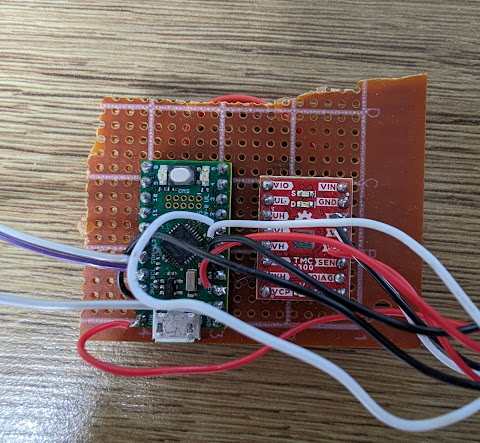
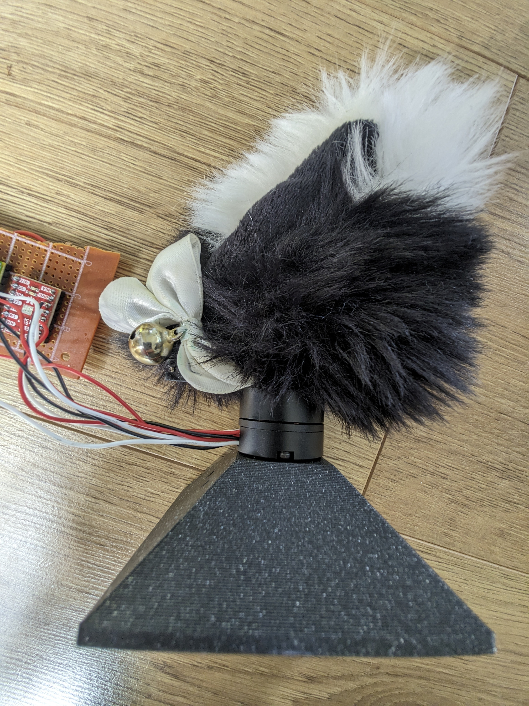
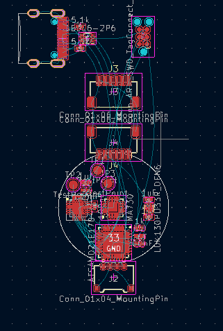
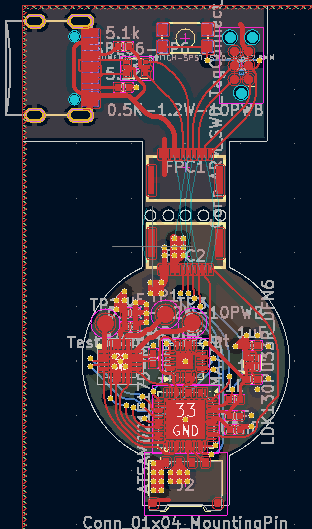
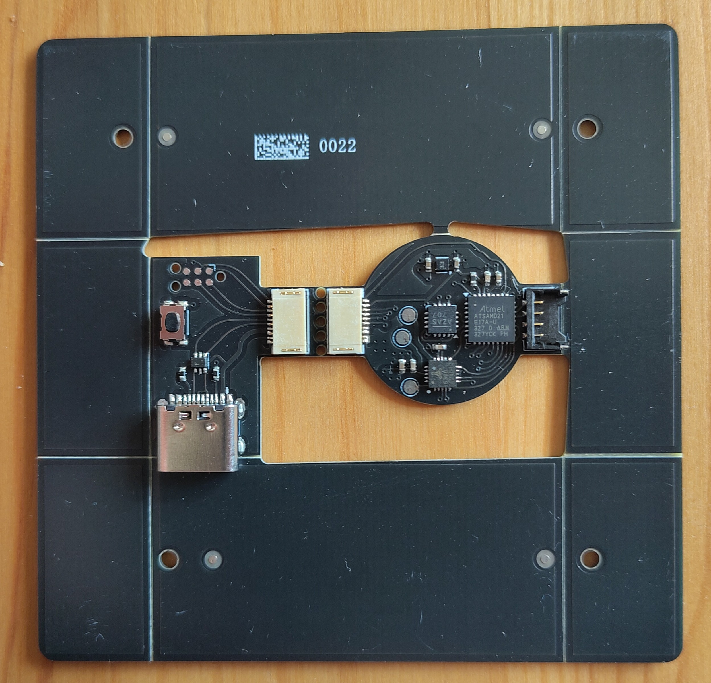
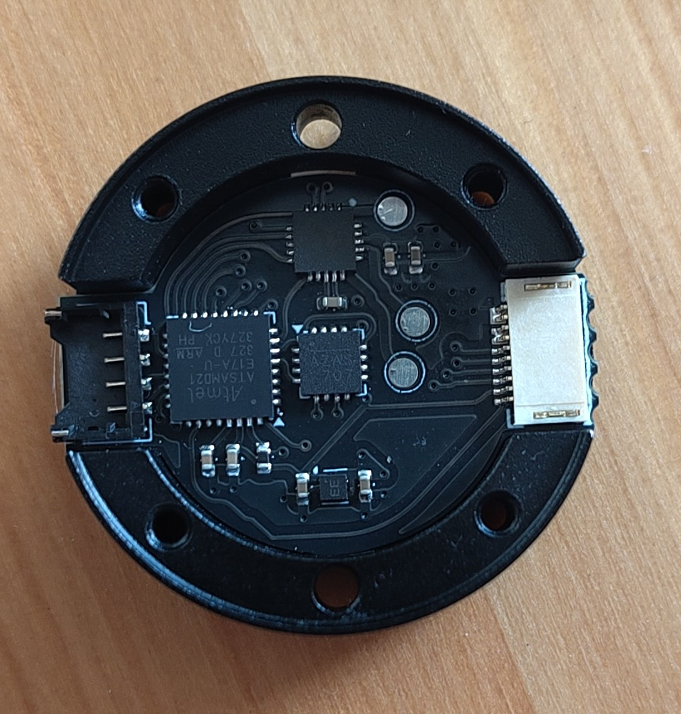
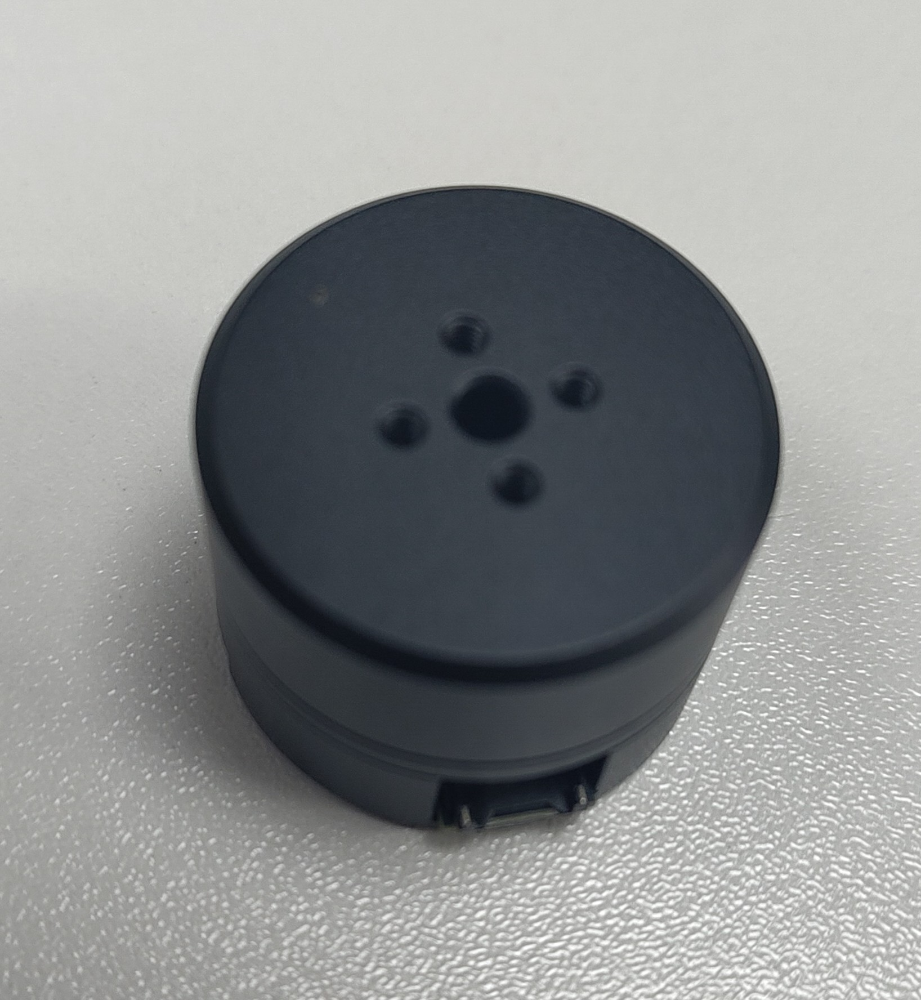

Mechanised Cat Ears Part 1: Actuators
30th January 2025
Whilst doomscrolling on Twitter looking at the various horrors in this modern time of ours I saw a pair of mechanised cat ears that moved with head movements and was immediately enthralled, but there were a few bits I didn't really like about them, the battery/electronics pack was big and bulky and hung off one side unbalancing the whole show and the ears were a little big compared to the cat ears I like, so as ever I started thinking about how I would do it, a few sketches and some planning later and a plan began to crystallise. Some wonderful, overcomplicated iconic bits of party/club wear for the three times a year I actually go to a club.
There's a few main parts to it, but one of the most important parts is the actuator for the ear. At the end of the day I can drive it with an arduino double stick taped to the headband if needs be, but the mechanical platform needs to be good. I'm also far less confident in my mechanical engineering capability than I am in my electronic engineering, if there's going to be a project breaking issue it'll be in the mechanical engineering.
Requirements
Cat ears are kind of funky, they can swivel most of a full rotation and also flatten out. So what is needed is essentially a 2 axis gimbal that can move within itself. The rotation angle needs to be at least 180 degrees horisontally and then have it fold down from vertical to flat, so 90 degrees vertically. The actuation system also needs to be as low profile as possible. It wouldn't be great if it stands 2 inches up off the top of my head. My plans for the electronics also affect this. The actuators need to run at 3-5V for 1s operation.
Initial concepts
My original plan was simple, and a little bit lazy. I was planning to hot glue two servos together so one pointed down to rotate around and one was horizontal with a frame assembly to support a hinge and the fabric ear cover. This was a bad idea for quite a few reasons.
- Most small RC servo motors only have a 90-120 degree rotation, fine for the folding but not ideal for the rotation
- I misunderstood how cats ears worked and had the hinge halfway up the ear, which would have needed quite a complicated hinge mechanism
- This whole assembly would be quite thick, compromising my desire for a low profile ear
I revised this concept with a hoop that moved the ear over the whole assembly but there were still issues. There's no way for both servos to move with the ear, so as it folds forwards a very blocky servo will poke out the back. Just in general having the rotation motor moving with the ear rather than mounted to the headband was problematic. Another solution a friend came up with involved bowden cables so the servos could be off axis and laid flat to the headband but it got a bit complicated. Ideally I wanted some extremely low profile, positionable motor that as far as I could tell, didn't really actually exist
I was searching AliExpress for "BLDC pancake motor" and a few other variances of that idea, trying to see what was out there that could be applicable for this application and came across this. It had almost everything I wanted. Low profile enough (19mm bottom to top), magnetic encoder support and a bldc motor can spin infinitely, so it'll be able to spin to any angle I want. It was so perfect that when I went looking for it again the next day and struggled to find it again I genuinely thought I'd dreamt it.
BLDC motors/servos
Brushless motors are great, they come in all sorts of shapes and sizes, really pack a punch for the size and weight and are fairly easy to drive. Also compared to the status quo in brushed motors they're usually a lot quieter and dont make that weird burning sparky smell when you put them under a lot of load. They might not have the holding torque of a stepper motor but they can come in much more compact form factors than a stepper. I've used plenty of them without any position sensors in rc planes and quadcopters, and used a couple hall sensored ones in some people moving projects including electrifying my little brothers "trunki" suitcase, but I've never experimented with using an absolute encoder. An absolute encoder on a brushless motor really turns the benefits up, you can drive them to any position you like. Brushless motors dont have any holding torque at zero speed, but with position control you can immediately try and fight back to the setpoint as soon as there's any deviation so it's pretty close. These 2205 gimbal motors I'd found were perfect except for one thing, the operating voltage. They were intended to run at 12V, and would be pretty gutless at 3-5V that they'd be running at in this equation.
God bless alibaba
All the AliExpress sellers were selling the same thing, so there had to be an OEM somewhere and after a bit of hunting on Alibaba I found the Dongguan Faradyi Technology Co, who appear to be the original manufacturer of these little motors, and were very happy to make a set of 10 custom wound to my specifications. They ended up being about the same price per unit as the AliExpress ones and were at my door within a couple weeks of ordering, which is fantastic for a custom part, I can't recommend them enough if you have a weird motor need. I got 9 with magnets but bare base housings, and one with their PCB with a single AS5048A encoder in it, figuring it would make testing and initial development nice and easy.
Control electronics
BLDC motor commutation is tricky, and given that this is just a project to get to a project it's not worth investing the time engineering a solution from scratch when the wonderful SimpleFOC library exists. It's truly a testament to the power of open source that this library with incredibly broad hardware support and very powerful functionality is freely available for anyone to use for any project. The hardware compatibility list encompasses many different microcontroller families, but my eyes were drawn to the SAMD21 for similar reasons to why I used one in the smolpad. They're pretty small, dead easy to implement and have native USB. Being a reasonably modern microcontroller family they have more pin flexibility than a lot of other ones too which can come in very handy. As a bonus there exists a development board for the SAMD21E17A, the Rabid Prototypes Tau, with arduino IDE support which plays nice with SimpleFOC.
Running a BLDC motor at 1s lipo voltages isn't uncommon in the RC space, but more complex position control tasks are definitely a bit of an oddity, there's not a huge wealth of motor control ICs dedicated to that sort of application, but trinamic have the TMC6300, which ticks all the boxes, enough current to run things, fully self contained without needing external FETs or anything and with enough idiotproofing to stop me making magic smoke. Sparkfun have a development board for the TMC6300 too which made building up a test setup super easy.

Pin mapping fun
Step 1 upon receiving all the bits and bobs needed to make it work was try and get the angle sensor working, which in and of itself was harder than it should have been. The predefined configuraiton for the AS5048A doesn't seem to work, but if you declare an identical configuration it works perfectly. I started out using the conventionally defined
The SimpleFOC documentation suggests that you can use any pair of pins that connect to a timer for each channel in 6pwm operation, but the answer isn't so simple for the SAMD21, there's a main timer with 4 true pwm channels but 8 pwm pins for matching and corresponding operation, it's all a bit complicated. When I originally hooked it up I connected it as i thought made sense and the motor would just twitch a bit, breaking out the $30 oscilloscope I saw two channels weren't having their low side getting driven correctly. After some conversations with the developers in their Discord it turned out that SimpleFOC doesn't respect the pin configuration in variant.cpp when using the SAMD21, instead manually overriding the pinmapping to use a specific set of timers, the solution was use the correct set of pins, and change some of the mapping in variant.cpp so it doesn't try to write conflicting functions to the same set of pins. The issue with this approach is that those pins were shared with the standard SPI peripheral so that had to move, and the I2C peripheral had to be disabled to make room for an extra UART for the communication between the driver and its eventual controller. SimpleFOC wouldn't combile without a valid Wire declared, so i just deleted the i2c sensor cpp files and it compiled properly.
Control loop fun
After getting the motor running I bolted a cat ear to it to see how the control loop would respond, and the answer was rather typically not great. The large floppy mass of the ear made it behave somewhat funkily and no amount of fiddling with the parameters would get rid of the springiness it exhibited that I didn't really want. 360 Degree rotation was a cool party trick, but when I got a bit ambitious with the velocity limits it absolutely freaked out. My hope at the time was that constraining the ear a bit better with the second axis and all the hoopy support bits would keep it controlled enough that it wouldn't go quite so nuts.

PCB time
The space in the motor well is limited to say the least. The components need to fit in an ~18mm diameter circle and there's two 8mm wide slots spaced 180 degrees apart which are a great spot to put some connectors. Fitting the components wasn't too bad, the microscopic 3.3v regulator from the smolpad came in handy here, but the requirement for the magnetic angle sensor to be dead center on the board made things a bit cramped with the SAMD21. Originally I feared I'd need the WLCSP package of the SAMD21 which would be a bit of a pain, but by pushing the connector out a fraction of a mm it just about fit which was a relief. 4 layers were chosen here so there could be a big uninterrupted power and ground plane, the motor could theoretically consume up to 1A and it's much better to be too generous with the copper than too sparing. Finding connectors that fit was a bit tricky too, for the main connector since it only needs 4 pins I went for a molex pico ezmate, which can handle 1.5A per pin and fit very nicely, however the programming and debug connector needs 8 pins ideally, 5V, GND, usb D+, D-, SWD, SWC, Vref and reset. I ended up going for a 10 pin friction fit ffc connector, doubling up on the 5V and GND pins for a bit more current capacity. A little disconnectable daughterboard that snaps off houses a matching debug connector, as well as the tag connect connector and a type C port.

It ended up being not too tricky to route. I probably could have gone back and optimised the pin orders a little better for even easier routing but I didn't want to mess with a working setup. This was the first PCB I experimented with trace rounding on and it looks very nice, definitely something that'll be continued on future boards.

Clock fun
I was on the verge of ordering PCBs when I took another good look at the Rabid Tau's schematic and realised something. They're using an external 32khz oscillator as a clock source. The SAMD21 can work without external clocks, and i'd designed the motor driver with this in mind. There was room for a crystal but the board was finished, and moving bits around to fit it in didn't really appeal, so I had to go back to digging through the arduino core trying to figure out what else needed to be changed to make it work. Fortunately Adafruit did some SAMD21 boards that worked without a crystal, and copying and pasting their startup code seemed to do the trick, although for the older version of CMSIS used on the tau some extra defines had to be added too. The bootloader needed the same modification too. I gave the crystalless code a test on the test board and everything seemed to work right on it.
JLCPCB
Because this PCB is pretty compact and I ordered enough to use in all of the motors I got I went for PCB assembly with JLC. The only issue with that is they didn't have the MA730 angle sensor in their parts catalogue, so it had to be ordered in using their global parts sourcing service. This was the firat time I used the global parts sourcing service and it was a fairly painless experience, my only complaint is it took a month to get the parts in, which did slow things down a bit.

Once the PCBs arrived I snapped them out the fiducial frame and test fit them in the motor base. They fit like an absolute glove, with the motor on top the clearance of the magnet to the sensor was quite tight, so running wires through the hollow shaft of the motor is probably not feasible, which is rather unfortunate. The board was glued down with a bit of E6000 style glue.

First axis finishing touches
The bootloader and firmware were flashed onto the board then I started testing it with SimpleFOCStudio. The custom clockless bootloader was a pain to deal with. First it wouldn't flash from within the arduino IDE because it needed rebuilding, but rebuilding it on windows the arm compiler wasn't launching probeterly because of a makefile or something. I just sent the files over to my linux laptop and built it, although I had to install the tau board definition to get all the right tooling in the places the makefile expected it to be. This bootloader ended up not working right so I ended up using the Adafruit UF2 bootloader for samdx1 which worked but didn't play nice with the bossac uploader. The final programming and uploading chain ended up being a fairly convoluted mess of compile in arduino ide, find build folder in AppData/Local/Temp, copy the uf2conv.py script provided by microsoft to that folder, convert the .bin to .uf2 then flash it onto the board. The board also wouldn't enumerate in SimpleFOCStudio at first, but that turned out to be the serial port defines being configured to send all the debug information out through the port expected to be used when it's in the final system and not the USB serial.
The magnetic encoder was a little bit funky at first, but after some fiddling with the motor soldering (the motor wires were shorting against the magnet) and loosening the screws that clamped the motor against the base half a turn it was working great. The control loop was fairly out of tune, but it had been tuned for the mass of the ear on top.

A second axis
The vertical axis is servo driven, using some 6g metal gear servos. Quite a few compromises were made in the aim of reducing the footprint, so it's not as strong as it could theoretically be, the load is supported by the servo on one side and a random bearing i nicked from a drone motor on the other side. It should work fine though, it's not exactly a high load application. On the bearing side the servo is supported by a little cup that connects the body of the servo to the bearing, leaving the top mounting ear free to mount the actual ear support hoop too. I'm not very proud of this design in general,assembling it relies on a lot of flexing and kind of sketchy stuff, but it does the task required of it.
Next steps
Now the actuator has been cracked, the next step is designing the main board to run both ears. The first step is going to be a small development board using a Seeed Xiao nRF52840 Sense, then if that succeeds a full custom flex PCB might be designed to make an even more polished project.
Source
The PCB and firmware source files for the motor are available here. Please note it's not exactly intended for end user use, since it was meant to be the smaller project to lead to a bigger one there's a lot of bodges and hacks right now. If I have more time down the line I might spend some time cleaning it up and getting it ready for public release. The TMC6300 can handle up to 11v, but the voltage regulator I chose is 5V max, so the PCB would need some modification before operating at higher voltage with the commercially available gimbal motors.
Link text